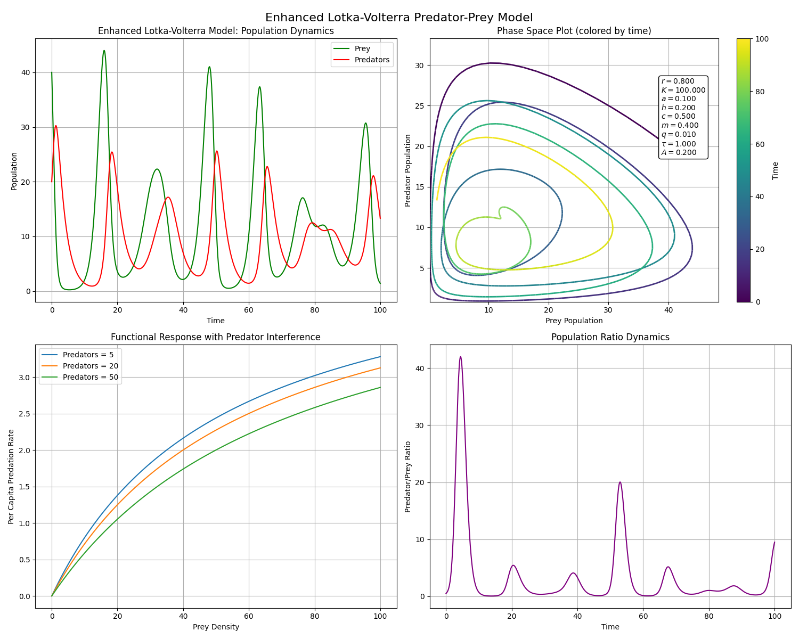

Project Overview
This project models and visualizes the Lotka-Volterra predator-prey system and its enhanced variants, highlighting predator-prey population cycles over time.
Key Features
- Basic Lotka-Volterra model with predator-prey interactions
- Enhanced model with additional ecological factors for realism
- Visualizations of population dynamics and functional responses
- Animated phase space visualization
Lotka-Volterra Model
The Lotka-Volterra model describes predator-prey interactions through a system of non-linear differential equations:
\[ \frac{dx}{dt} = \alpha x - \beta xy \]
\[ \frac{dy}{dt} = \delta xy - \gamma y \]
Where:
- \(x\) = Prey population
- \(y\) = Predator population
- \(\alpha\) = Prey growth rate
- \(\beta\) = Predation rate
- \(\gamma\) = Predator death rate
- \(\delta\) = Predator growth rate due to consuming prey
Model Limitations
The basic model has several key limitations:
- Unlimited Prey Growth: Assumes exponential prey growth without resource limits.
- Linear Predation Response: Ignores predator satiation and handling time.
- Absence of Competition: No consideration of inter- or intra-species competition.
- No Time Delays: Immediate population responses, though natural systems show delays.
- Constant Parameters: Ignores seasonal/environmental changes.
- Perfect Cycles: The model predicts ideal cycles, which rarely occur in nature.
- Deterministic Dynamics: No stochastic factors, which affect real populations.
Modified Lotka-Volterra Model
The modified Lotka-Volterra model consists of two differential equations, one for the prey population (\(x\)) and one for the predator population (\(y\)). These equations describe the dynamic changes in both populations over time.
Prey Population Dynamics:
The first equation represents the rate of change of the prey population:
\[ \frac{dx}{dt} = r x \left( 1 - \frac{x}{K} \right) - S y f(x,y) \]
Breaking Down the Terms:
- Intrinsic Prey Growth (\(r x\)): This term represents the natural growth of the prey population in the absence of predators. It follows logistic growth, where \(r\) is the intrinsic growth rate, and the factor \(\left( 1 - \frac{x}{K} \right)\) introduces a carrying capacity \(K\), limiting growth as resources become scarce.
- Carrying Capacity (\(K\)): This is the maximum sustainable population size that the environment can support, taking resource limitations into account. It prevents the prey population from growing indefinitely.
- Predation (\(- S y f(x,y)\)): This term represents the negative effect of predators on the prey population. \(S\) is a seasonal factor that influences the predation rate over time, and \(f(x,y)\) is the functional response of predators to prey availability, capturing how predator hunting efficiency changes with prey density. The term \(-S y f(x,y)\) reduces the prey population as predators consume them.
Predator Population Dynamics:
The second equation describes the rate of change of the predator population:
\[ \frac{dy}{dt}(t) = c S y f(x(t-\tau),y(t)) - m y(t) \]
Breaking Down the Terms:
- Predator Growth (\(c S y f(x(t-\tau), y(t))\)): This term represents predator growth due to the consumption of prey. \(c\) is the conversion efficiency, representing how much of the consumed prey's biomass contributes to the predator's growth. The term \(S\) accounts for seasonal effects, and \(f(x(t-\tau), y(t))\) is the functional response with a time lag (\(\tau\)) indicating that predator response to prey density occurs with a delay.
- Predator Mortality (\(- m y\)): This term represents the natural death rate of the predator population, where \(m\) is the mortality rate of predators. It decreases the predator population over time, regardless of prey availability.
Model Justifications
Prey Logistic Growth
Incorporating logistic growth for the prey population ensures that growth is self-limiting, preventing unrealistic exponential growth. This reflects ecological principles where natural populations are constrained by available resources. The carrying capacity \(K\) sets an upper limit for the prey population in the absence of predators.
Holling Type II Functional Response with Predator Interference
The functional response \(f(x,y)\) is modeled using a Holling Type II function with predator interference:
\[ f(x,y) = \frac{ax}{1 + ahx + qy} \]
This accounts for the fact that as prey density increases, the rate at which predators can consume prey starts to saturate due to handling time and predator interference. \(a\) is the attack rate, \(h\) is the handling time, and \(q\) is the predator interference coefficient, which accounts for the reduction in hunting efficiency as predator density increases.
Seasonal Variations
Seasonal fluctuations are modeled with a sinusoidal function for the seasonal factor \(S\), which affects both predation and predator growth rates:
\[ S = 1 + A \cdot \sin(2\pi t/12) \]
This introduces periodic variations in the model, reflecting how environmental conditions (such as temperature and resource availability) change throughout the year, impacting predator and prey populations.
Time Lag in Predator Response
A time lag \(\tau\) is introduced to account for the delayed response of the predator population to changes in prey abundance. This reflects the fact that reproduction in predators lags behind changes in prey availability. The time lag is incorporated in the equation for predator growth, where the prey density at a previous time \(x(t-\tau)\) is used to determine predator growth.

Remaining Limitations
Despite improvements, the enhanced model still faces limitations:
- Spatial Homogeneity: Assumes well-mixed populations without spatial structures.
- Age/Size Structure: Ignores differences in age/size within species.
- Species Interactions: Only two species are modeled, while real ecosystems involve more interactions.
- Evolutionary Dynamics: Doesn't account for evolutionary changes over time.
- Environmental Stochasticity: Random environmental factors are excluded.
- Demographic Stochasticity: Birth and death rates are treated deterministically.
- Parameter Sensitivity: The model is sensitive to parameter values that are difficult to measure.